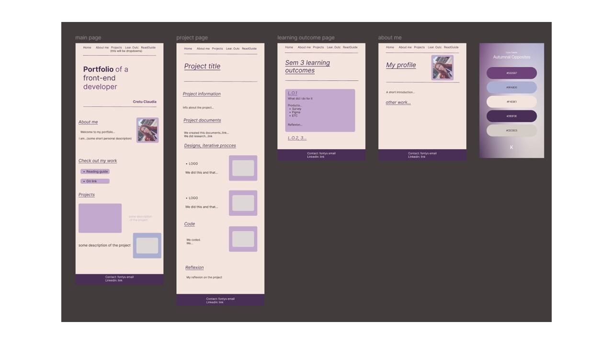

Portfolio semester two

Portfolio semester three
This projects are my semester two and three portfolios. In this semesters one of my school assignments was to create a portfolio website where I showcase my work during the semester. They contain information about the projects I have worked on, the technologies used, the project process, the final product, and a reflection on the project. The semester two portfolio is created using HTML, CSS, and JavaScript, while the semester three portfolio is created using React.js and Tailwind CSS.
In this section, I will explain the steps I took to complete the projects. This includes the initial planning, design, development, testing, and deployment phases. Both of the portfolios have a similar process of creation. The first step was to do research on portfolio websites and gather inspiration for the design. I looked at other designers' portfolios to see what elements they included and how they organized their work. I also researched different technologies and tools that I could use to create the portfolio. The next step was to create a wireframe and design mockup of the portfolio. I sketched out the layout of the website and created a visual representation of how it would look. I also created a color palette and typography style guide for the project. After that was approved by my teachers I moved to prototyping, creating multiple iterations. After finalizing the design, I started developing the portfolio. I created the structure of the website, styled it, and added interactivity. I also optimized the website for mobile devices and tested it on different browsers and at the end deployed it on the university server.
Portfolio semester two
Portfolio semester three
Reflecting on this project, I learned a lot about web development and design. I improved my skills in HTML, CSS, JavaScript, React.js, and Tailwind CSS. I also learned how to plan and execute a project from start to finish, including the design, development, testing, and deployment phases. I faced many challenges during the project, but I was able to overcome them with perseverance and hard work. I am proud of the final product and the progress I have made as a designer and developer. I am excited to continue learning and growing in this field and to work on new projects and challenges.